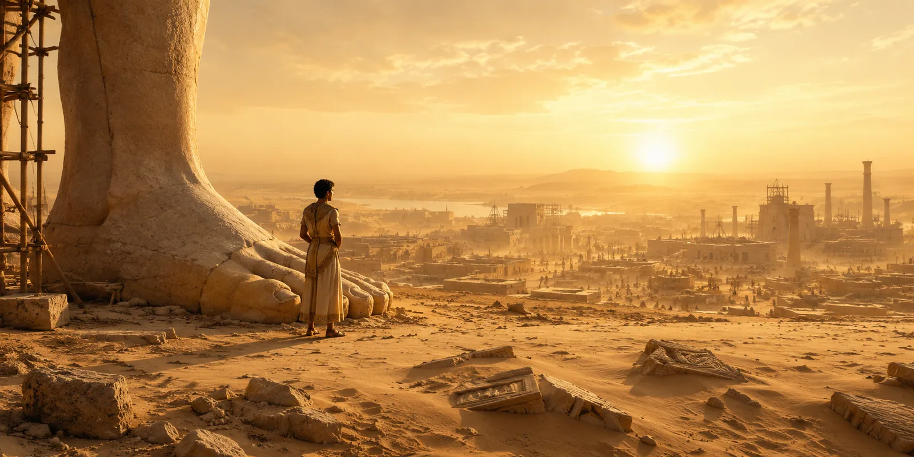

Verse · School magazine ·
Florilegium
Five plants that bloom against season, habitat, or fate: rafflesia, witch hazel, poppy, queen of the night, and tumbleweed.
Finished writing · Six works
Fiction, poems, drama and essays. Six pieces, six ways into the world.
Verse · School magazine ·
Five plants that bloom against season, habitat, or fate: rafflesia, witch hazel, poppy, queen of the night, and tumbleweed.
Essay · John Locke shortlist ·
Neuroscience can explain the mechanisms of religious states. Are “how it arises” and “what it means” truly the same question?

Fiction · School magazine ·
Medicine, masks, and observation form a Baroque farce in which healer, patient, and audience exchange places.
Fiction · School magazine ·
A historical story with rank, chess, and war beneath its surface. Promotion means approaching power — and the place most easily sacrificed.

Fiction · School magazine ·
The boy who would be king, the king among the ruins, and the traveller from an antique land. Shelley’s poem, told from inside the sand.
Essay · School magazine ·
The Renaissance is not a sealed historical period. City, print, knowledge, and contemporary technology continue to illuminate one another.